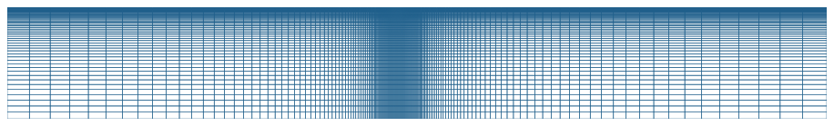
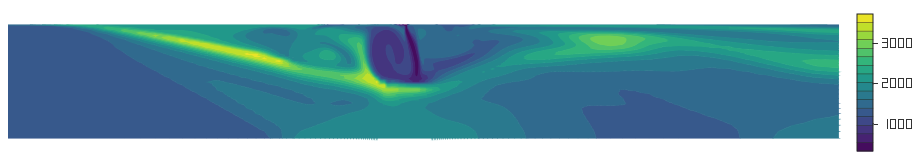

Hydrogen jet in supersonic cross-flow, no-slip wall
Hydrogen enters a hot supersonic air flow through a slot of 0.75 mm in the wall, perpendicular to the flow; laminar, with combustion, no-slip wall. The flow separates ahead of the jet; the computation is time-accurate and second order.
Case summary
| Item | Value |
|---|---|
| Model | Navier-Stokes, laminar |
| Mesh | 7,752 cells |
| Time stepping | Newton-Krylov (implicit) |
| Result of the run | zeit_erreicht after 12941 steps, relative residual – |
What the case shows
Purpose
A jet of hydrogen enters a supersonic flow of hot air through the wall, perpendicular to the flow. At the no-slip wall the jet blocks the boundary layer: the flow separates ahead of it, a recirculation zone with its own shock forms, and the hydrogen carried upstream burns at its edge. The case checks how far the computation reproduces this interplay of shock, separation and combustion as an independent computation of the same channel does, and as the experiment does.
Theory of the reference
There is no closed-form solution for the length of the separation or the wall pressure. The reference comes from the thesis the case is taken from: a two-dimensional computation of the same half channel with the same inflow data and an inlet without boundary layer, and three measured wall-pressure points behind the jet from the experiment. The thesis gives a length of 94.0 mm for the recirculation zone ahead of the jet and shows the wall pressure of the computation at two instants; the two curves and the measured points are read from the figure in the thesis.
Here the separation point is the first location on the wall where the velocity in the cell next to the wall changes sign from plus to minus, determined linearly between the two cells; the length runs from there to the leading edge of the slot at mm. The computation gives mm against mm, a deviation of %.
The wall pressure is referred to the pressure at the inlet. The tolerance against the two computed curves is their own distance from each other (root mean square 0.32), the tolerance against the measurement is half the largest error bar (0.31).
Procedure
The case does not converge as a steady computation: the recirculation zone grows upstream over milliseconds. It is therefore computed time-accurately with dual time stepping, in second order throughout. Starting from uniform flow the scheme does not survive the sudden onset of the jet; the way leads through the channel without injection: first the flow with its boundary layer converges as a steady computation, then the jet is switched on, at first with a small time step. The stored run covers the last 1.2 of 4.9 milliseconds. The separation point lies at 24.0, 16.6, 17.5 and 18.3 mm at 1.3, 2.5, 3.7 and 4.9 milliseconds after switching on: at the end it still moves by less than one millimetre per millisecond.
Note: the sum of the mass fractions
The species follow the flow loosely coupled. If a time level has not converged within, the residual of continuity would go into the sum of the mass fractions; the solver subtracts it, as described in species, sum of the mass fractions. In this case, without the correction the sum lay between 0.9984 and 1.0001 after 20 time steps. The computation uses a drop of three orders of magnitude per time level; with two, the temperature was locally up to 89 K off the converged computation.
What the picture should show
The cold jet stands at the upper wall about halfway along the channel and is turned by the air at once; behind it the hydrogen lies as a layer at the wall. Ahead of the jet a flat recirculation zone reaches far upstream, filled with cold hydrogen; at its edge, from the separation point obliquely towards the jet, the flame sits as a thin hot band. An oblique shock runs into the channel from the beginning of this zone. The film shows how the zone forms after the jet is switched on.
Limits of the comparison
- The wall pressure does not agree. In the recirculation zone ahead of the jet it is about 3.5 bar here and about 2.3 bar in the reference computation; the deviation clearly exceeds the tolerance. The length of the separation matches the reference computation better than the pressure inside it. A cause has not been established; the mesh of the reference computation is about ten times finer at the wall (around 10 µm against 0.1 mm) and has a good four times as many cells.
- Against the measurement both computations are too high. According to the thesis the recirculation zone in the experiment is only about half as long: the two-dimensional computation turns the hole into a slot, the jet cannot give way sideways and penetrates too deeply.
- Behind the jet the flow fluctuates; the wall pressure there changes by up to 1 bar from one instant to the next. A single instant is compared, not a time average. The two curves of the reference computation also differ from each other.
- The reference computation determines the length of the separation from the water concentration; here the sign change of the wall velocity counts. The two measures need not lead to the same point.
- The slot is 0.75 mm wide and lies on the cell grid at 105.00 to 105.75 mm; in the figure of the thesis the jet lies at 104.95 to 105.70 mm. The text of the thesis does not give the width.
- The reference curves and measured points are read from the figure, not from a table.
Mesh

Result view

Validation
The reference is Kallenberg's two-dimensional computation of the same channel (length of the recirculation zone ahead of the jet, wall pressure at two instants) and three measured wall-pressure points from the experiment (R98). The wall pressure is referred to the pressure at the inlet.
Key figures
| Profile | Reference points | RMS deviation | largest deviation | tolerance (RMS) |
|---|---|---|---|---|
| p/p∞ at the wall | 250 | 0.947 | 2.43 | 0.330 (exceeded) |
| p/p∞ at the wall | 250 | 1.06 | 2.39 | 0.330 (exceeded) |
| p/p∞ at the wall | 2 | 1.26 | 1.27 | 0.310 (exceeded) |
| Quantity | computed | reference | deviation |
|---|---|---|---|
| length of the separation ahead of the jet in m | 0.08666 | 0.09400 | −7.81 % |
Sources
R98.